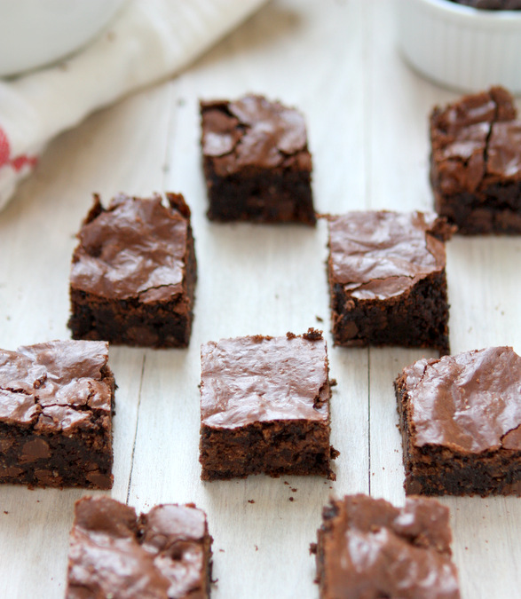

Back
Oat Flour Brownies
Ingredients
- 1 1/2 – 2 cups gluten-free oatmeal
- 3/4 tsp baking soda
- ½ tsp espresso powder
- 3/4 cup unsalted butter
- 1 1/2 cups sugar
- 1 cup cocoa powder
- 1 tsp salt
- 1 Tbsp vanilla extract
- 3 large eggs
- 1 1/4 cup chocolate chips

Instructions
- Preheat the oven to 350 F, and lightly grease an 8×8″ pan.
- In a food processor or blender, grind the oatmeal to a fine powder. Measure out 1 1/3 cups oat flour, and combine with the baking soda and espresso powder. Set aside.
- In a saucepan over medium-low heat, melt the butter.
- Once melted, add the sugar and cook for another minute.
- Remove from heat and add the cocoa and salt. Stir to combine.
- Add the vanilla, and then the eggs one at a time. Whisk fully so that the mixture is smooth and glossy.
- Add dry ingredients to the wet ingredients, mixing until just combined.
- Stir in the chocolate chips (if you want them fully intact, let the mixture cool 10 minutes before doing this step).
- Spread the mixture into the prepared pan and cook for 30-35 minutes – the top should have a thin crust, but the center will still be quite moist.
- Let cool 20 minutes before cutting and serving.
Source